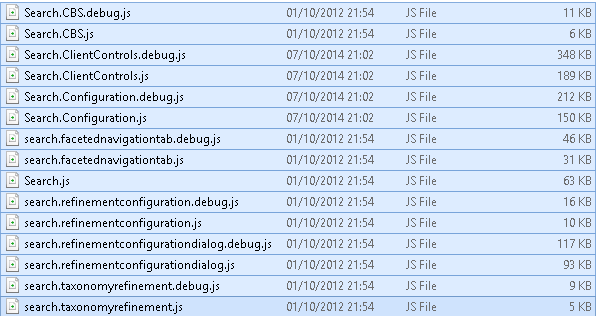

Introduction
With SharePoint 2013, the search capabilities are heavily invested in and we see a lot of new JavaScript files in our pages. For example, in term of Search Result Pages, we have a lot of JavaScript files and functions.
The goal of this post is to have like a API reference about these Search JS files. It is annoying to have to go over the files every time we need to remember some which classes we have inside. Later on this post we will go further with Refinement Web Part explaining some of the core classes and functions the have available.
This could give us the possibility to reuse some functions in our custom JavaScript solutions.
Path
If you go to Layouts folder C:\Program Files\Common Files\microsoft shared\Web Server Extensions\15\TEMPLATE\LAYOUTS you can find these files:

Reference tables
This table will compile all the js file descriptions, namespaces and classes. That is intended to use as a reference instead to have to open all the JS files each time we need to investigate something.
| File | Namespaces | Classes | Description |
|---|---|---|---|
| SP .Search .js |
Microsoft .SharePoint .Client .Search .Query |
Provide JSOM main to use JavaScript to Query the index. Some examples here: Combining Results in Hybrid env - COB Query Search with CSOM |
|
| Search .Configuration .js |
Search .Configuration |
CatalogItemPicker ContentBySearch QueryBuilderUtility CustomTab RefinerTab QueryBuilder TokenExpansionData QueryTemplateProperty QueryBuilderResultSourceData QueryBuilderConfigData QueryBuilderState SettingsTab Refinement SortTab TestQueryTab |
Provide JavaScript to deal with Search Configuration: ContentBySearch, Query Builder,… |
| search .faceted .navigation .tab .js |
Microsoft .SharePoint .Search .FacetedNavigation |
TermInfo TermDescendantsInfo TermRefinementInfo TermRefinementInfoWebServiceResult TermDescendantsInfoWebServiceResult FacetedNavigationTab |
JavaScript engine for Managed Metadata Navigation in SharePoint 2013 |
| Search.js | Sounds like a mix between old format JavaScript and FAST integration. But I don’t really know what is intended for. | ||
| search .refinement .configuration .js |
Microsoft .SharePoint .Search .FacetedNavigation |
RefinementConfigurationDialogArgs RefinementConfiguration RefinerConfiguration RefinerConfigurationUIUtilities ContextDataProviderState |
Provide JavaScript functionality for Refinement Configuration page showed when Click on Show Refiners in the Refinement Web Part configuration pane. |
| search .refinement .configuration .dialog .js |
Microsoft .SharePoint .Search .FacetedNavigation |
ManagedPropertyDescriptor RefinementWebPartController RefinementPreviewPopupDialogArgs RefinementPreviewPopup RefinementConfigurationDialog |
Provide JavaScript functionality for the UI of Refinement configuration screen. |
| SearchUI .js |
Srch | Srch.SU Srch.CU Srch.PSU Srch.SiteSearchUtil Srch.SSU |
It provides common javascript ui functions and definitions, like div ids, guids, image url constants, OOTB field names,… |
| search .CBS .js |
Srch | ContentBySearch | JavaScript engine to deal with UI, Display Templates, … for Content By Search Web Part. |
| search .taxonomy .refinement .js |
Srch | TaxonomyRefinement TaxonomyRefinementNodeInfo TaxonomyNodeSearchResult |
Provide the JavaScript engine to deal with Taxonomy Refiners with methods like get_taxonomyRefinerName, get_currentTaxonomyNodes, get_renderCounts, get_itemTemplateId, … |
| Search .ClientControls .js |
Srch | Srch.EventType Srch.MessageLevel Srch.UserActionType Srch.DateTimeKind Srch.ClientControl Srch.DataProvider Srch.DisplayControl Srch.Refinement Srch.Result Srch.SearchBox Srch.U Srch.U.PropNames Srch.U.Ids Srch.U.LoadScriptsState Srch.ListenedEvent Srch.ScriptApplicationManager Srch.QueryGroup Srch.LanguagePreference Srch.QueryState Srch.RefinementControl Srch.RefinementCategory Srch.DefaultQueryProperties Srch.ResultSort Srch.RankRule Srch.ComplexResultSort Srch.ControlMessage Srch.PagingLink Srch.ResultEventArgs Srch.BatchResultEventArgs Srch.QueryEventArgs Srch.NavigationNode Srch.ClickRecorder Srch.RefinementUtil Srch.ValueInfo Srch.ValueInfo.Parsers Srch.ValueInfo.Renderers Srch.ValueInfo.ValueTypeHandler Srch.ParseJSONUtil Srch.DataConvertUtil |
Provides the JavaScript engine (prototypes, functions, …) to deal with Filters, Display Templates, Paging, … inside Search Results, Search Box and Refinement WebPart |
Specifically, we will see in detail the Classes needed to understand the Refinement Web Part JavaScript client processing. IN the above table we have in bold all the classes that will be explained in the below table:
| Class | Important Methods | Description |
|---|---|---|
| Srch.DataProvider | get_currentQueryState get_sourceID get_sourceName get_queryGroupName get_rankRules get_initialQueryState set_initialQueryState get_selectedRefiners set_selectedRefiners get_totalRows get_rowCount get_refinementInfo get_resultsUrl set_resultsUrl get_upScopeUrl get_effectiveQueryLanguage raiseQueryIssuingEvent raiseResultReadyEvent add_queryStateChanged remove_queryStateChanged raiseQueryStateChangedEvent getSortRankName getSortName |
This is the data collector (controller). This Object keeps information about Search Box, Refiners, Results, paging and so more. This is intended to provide data when page status changes in the Search Page. For example, if some results require paging, or require a batch query issuing. When a new query is requested using Search Box, this object can get the information from Search index asynchronousically. |
| Srch.DisplayControl | get_queryGroupName set_queryGroupName get_dataProvider get_renderedResult get_currentResultTableCollection scriptApplication_PreLoad add_queryReady dataProvider_QueryIssuing dataProvider_ResultReady refresh render |
This is the Search Results Web Part manager (model). It is on charge of manage all the process of calling data provider, be sure data provider is on the most updated status and call the render (control and items display templates). |
| ScriptApplicationManager | get_current() get_clientRuntimeContext() get_preferencesUrl get_displayTemplatesUrl get_queryRulesUrl get_resultSourcesUrl get_userAdvancedLanguageSettingsUrl get_pagePath add_preLoad(value) remove_preLoad(value) raisePreLoadEvent() add_load(value) remove_load(value) raiseLoadEvent() add_postLoad(value) remove_postLoad(value) raisePostLoadEvent getUserPreferenceLanguages getAllSupportedLanguages getNavigationNodes getDisplayNameByLanguageID(lcid) registerClientControl(cc) navigateTo(url, fullNavigate) |
This is on charge of manage all the Scripts added, removed, registered and updated inside the overall Search Results Page. It is used to register controls, register display templates, navigate to other views without losing the script context, … |
| Srch.Refinement | createRefinementTextbox submitMultiRefinement getRefinementLocalizedTitle getRefinementTitle getExpanded setExpanded multiRefinerSpecifyOtherFilterValue get_selectedRefinementControls set_selectedRefinementControls get_useManagedNavigationRefiners set_useManagedNavigationRefiners addRefinementFilter addRefinementFiltersJSON addRefinementFiltersJSONWithOr addRefinementFilters addRefinementFiltersWithOp removeRefinementFilter removeRefinementFiltersJSON removeRefinementFilters updateRefinementFilters updateRefinersJSON updateRefiners removeRefinementCategory replaceRefinementFilter hasRefinementFilter hasAllRefinementFilters hasRefinementCategory getCurrentRefinementCategory getRefinementControl hasRefiner updateRefinementControls |
This is the Refinement Web Part manager. It is on charge of manage all the filters and communicate them with the Search Results Web Part. It uses Srch.QueryState object to maintain the consistency between the URL Query filters and the internal status in the Search JavaScript engine (browser memory). As you can see on the right column, it has a lot of methods to add, remove or update refiner filters. For a detailed view of every method you can visit: Elio’s post |
| Srch.QueryState | Srch.QueryState.prototype = { k: ‘’, // Keyword o: null, // Sort Orders s: 0, // Start At r: null, // Refiners (RefinementCategory object) l: 0, // Query Language m: ‘’, // Ranking Model ID d: 0, // Trim Duplicates Include ID x: null, // Rank Rules …. } |
Tracks transient search query properties that can be changed by a regular searcher and need to be persisted in url bookmarks. Similar to this one: MSDN |
| Srch.RefinementControl | Srch_RefinementControl(propertyName, spec, renderTemplateId) Srch.RefinementControl.prototype = { propertyName: null, spec: null, renderTemplateId: ‘4’, overrideDisplayName: null, useDefaultDateIntervals: false, containerId: null, alternateRenderer: null, alternateRenderContext: null, countDisplay: ‘Both’ } |
Represents a search result property bound to a refinement filter control. Similar to this: MSDN |
| Srch.RefinementCategory | Srch_RefinementCategory(refinementName) Srch.RefinementCategory.prototype = { n: null, t: null, o: ‘and’, k: false, m: null, get_tokenCount addToken (refinementToken) removeToken (refinementToken) hasToken(refinementToken) … } |
Represents a refinement category that consists of a refinement name and a list of refinement tokens. n: refiner name; t: refiner tokens; o: operator (and, or); k: use KQL (Boolean); m: this is the token to display value map. It’s used when a custom refinement value (textbox) is used. This stores the value that you inserted, to visualize it in the refiner. Example: “m”:{“equals(\”Item Value Text Box\”)”:”Item Value Text Box”} Via: Elio Struyf - Post |
| Srch.U | isPageInEditMode isPageInMdsMode isPagePartialLoad ensureNotNullOrUndefined(value, context, methodName, paraName) ensureNotNullOrEmptyString(value, context, methodName, paraName) isArray (obj) appendArray (a, item) trimExtraSpaces (text) ensureCSSClassNameExist (e, className) setCookie (name, value, expires, domain, path) getCookie (name) getHostName trace (c, method, message) encodeUrlForHtmlAttributes (url) getUsernameFromAuthorField (authorField) isWebPage (fileExtension) truncateEnd (original, maxChars) toFormattedDate (dateValue, dateTimeFormatId) toFileSizeDisplay (numberOfBytes, showDecimalPart) registerRenderTemplateByName (name, template) getRenderTemplateCollection() getRenderTemplateByName (name, renderCtx) getFormattedTimeFromSeconds (secondsStr) resolveRenderTemplate (renderCtx, component, level) trimTitle (title, maximumLengthInChars, numberOfTermsToUse) hideElement (element) showElement (element) loadScripts (scriptReferences, success, failure, timeout) appendScriptsToLoad (scripts, script) registerLoadedScripts (scripts) collapsibleRefinerTitle(propertyName, idPrefix, title, iconClass, customOnClick) isDefaultSiteSearchPage includeCSS (templateLink, relativeLink) includeScript (templateLink, scriptLink) includeLanguageScript (templateLink, scriptLink) loadResource (id) loadResourceForTemplate (id, templateFunc) registerResourceDictionary (locale, dict) |
The Srch.Uobject provides a range of JavaScript methods and enumerations to help you in your work with display templates customization in SharePoint 2013: Srch.U object (DisplayTemplatesSrch): MSDN Display Templates - DotnetMafia |
| Srch.RefinementUtil | peoplePickerApplyIdPrefix(ctrl) peoplePickerPrep(pickerId, ctrl, cliCtrl) refineByAuthor(pickerId, filterToken) authorRefinerResolved(controlID, pickerValue) escapeTokenStringValue(tokenValue) |
Refiners utilities almost all to manage people picker and user field. |